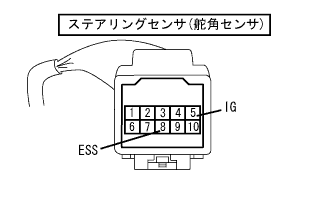

DTC C1231/31 舵角センサ系統異常 |
| DTCNo. | DTC検出状況 | DTC出力関連項目 |
|---|---|---|
| C1231/31 | IG1端子電圧9.5V以上で、ステアリングセンサからの異常信号を受信したとき |
|

| 手順1 | ダイアグコード確認 |
ダイアグノーシスコードを消去し、IGスイッチをOFFにする。
再度IGスイッチをONし、CAN通信異常のダイアグコードが出力していないことを確認する。
35ｋｍ/ｈ以上での走行およびハンドル操舵を行い、スピードセンサ異常およびヨーレートセンサ異常のダイアグコードが出力していないことを確認する。
| A | CAN通信異常、スピードセンサ異常、ヨーレートセンサ異常コードを出力しない |
| B | CAN通信の異常コードを出力 |
| C | スピードセンサまたはヨーレートセンサの異常コードを出力 |
|
| ||||
|
| ||||
| A | |
| 手順2 | ワイヤハーネス点検（ステアリングセンサ） |
ステアリングセンサのコネクタかん合にゆるみ、抜けなどの不具合がないことを確認する。
|  |
SST(トヨタエレクトリカルテスター)を使用して、ステアリングセンサの各端子←→ボデーアース間を点検する。
| 点検端子 | 測定条件 | 基 準 |
|---|---|---|
| 5(IG)←→ボデーアース | IGスイッチON | 10-14V |
| 8(ESS)←→ボデーアース | 常時 | 導通あり |
ステアリングセンサのコネクタを切り離す。
コネクタケース、端子に変形および腐蝕がないことを点検する。
|
| ||||
| OK | ||
| ||